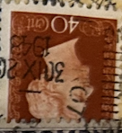
| SOURCE | TITLE| IMAGE MATCH | click to source page |
| Arpin Philately | Buy France #7 - Ceres (1849) 40¢ | Arpin Philately |  |
| eBay | Austria 1858 10Kr, Type II. STEINBRÜCK (St) beautiful, attractive! | eBay | 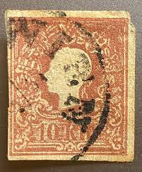 |
| What's the value of this stamp on an envelope? : r/stampcollecting | 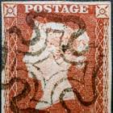 | |
| Stamp Auction | SAN Unattended Live Bidding Catalog Level 3 | 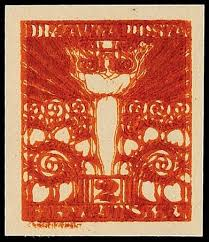 |
| eworldstamps.com | Denmark Definitives Part 4 - "Caravel?" Ship Series - EWorldStamps | 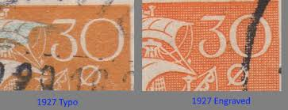 |
| Can someone please tell this is a stonewall case of unconscious biased, and that I'm seeing things. 😵💫😳🤔 I've highlighted what I "think" I'm seeing. Thanks. | 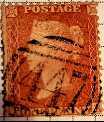 | |
| A | 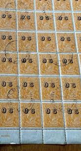 | |
| BB Stamps | Errors – Great British Stamps 1840 to DATE. Mint & Used GB Stamps | 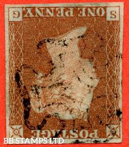 |
| Etsy | Cheltenham Vintage Postmarked Stamp Print - Home Town / Holiday Memories / Special Place - Etsy UK | 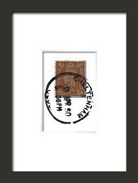 |
| eBay | Italy stamp 80 Lire COIN OF SYRACUSE $24.95 Free shipping!!! | eBay | 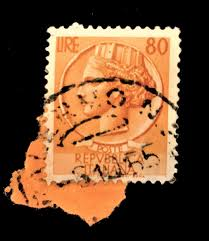 |
| Stamp value?? : r/stamps | 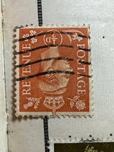 | |
| BB Stamps | Perforated 1d Stars – Great British Stamps 1840 to DATE. Mint & Used GB Stamps | 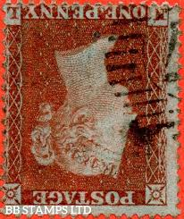 |
| BB Stamps | Imperf 1d Reds – Great British Stamps 1840 to DATE. Mint & Used GB Stamps | 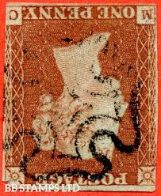 |
| BB Stamps | Imperf 1d Reds – Great British Stamps 1840 to DATE. Mint & Used GB Stamps | 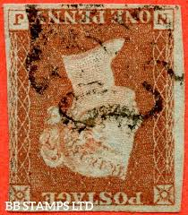 |
| eBay | Netherlands Postage ~ Queen Juliana ~ Orang 10₵ Stamp ~Cancelled ~ 1949 ~ G16 | eBay | 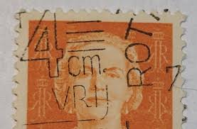 |
| PicClick | SG. 17WI. C1 (1)d. " KI KJ LI LJ MI MJ ". 1d Red Brown. Plate 167. INVERT B73505 $640.73 - PicClick | 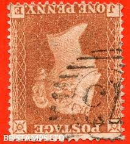 |
| John Kinnard Stamps | John Kinnard Stamps – Shop | 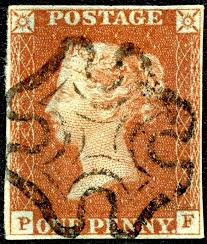 |
| eBay | Perforated Stamp Bonnichon And Cie On COVER Ancoper B.C. 52 | eBay | 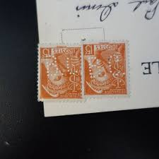 |
| eBay | Used Bullseye/SOTN Italian Stamps for sale | eBay | 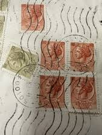 |
| John Kinnard Stamps | John Kinnard Stamps – SG 8ud 1d Red Plate 33 Superb London Number 4 In Maltese Cross Letters SC | 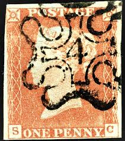 |
| BB Stamps | Errors – Great British Stamps 1840 to DATE. Mint & Used GB Stamps | 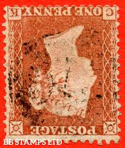 |
| eBay | SHS CROATIA 1919 - 2 fillers IMPERFORATED triple printed VARIETY no gum | eBay | 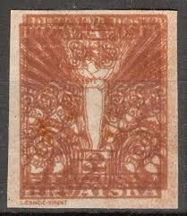 |
| Anchor cancelation, in use between 1857 and 1876 on french cruise ships to cancel mail coming from abroad or the colonies. : r/philately | 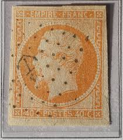 | |
| Glen Stephens Stamps | Buy USED Australia Roos now! New SG "New Zealand" cat out. $1m NSW "Holey Dollar" coin theft | 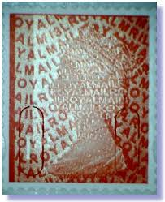 |
| First us stamp found in collection | 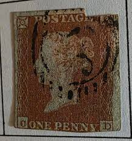 | |
| Broadsheet | Vernons Bar | Summer Hill | Bar | Broadsheet Sydney | Broadsheet | 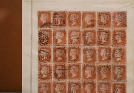 |
| eBay | Greek Architecture Stamps for sale | eBay | 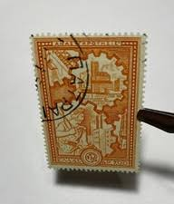 |
| eBay | Netherlands Postage ~ Queen Juliana ~ Orang 10₵ Stamp ~ Cancelled ~ 1949 ~ Z11 | eBay | 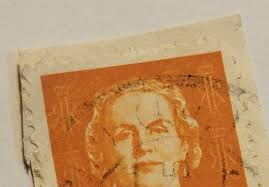 |
| BB Stamps | Plate 10 – Great British Stamps 1840 to DATE. Mint & Used GB Stamps | 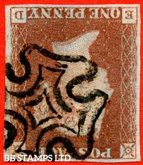 |
| eBay | WW2 - Liberation - De Gaulle N°1 Block Sheet Mint ** MNH Value 600€ (+20%) | eBay | 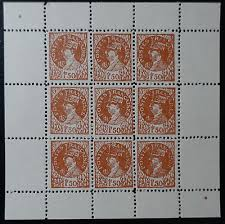 |
| eBay | Orange 1/- Denomination British Stamps for sale | eBay | 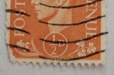 |
| Classic Stamps | Classic Stamps | 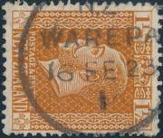 |
| Etsy | 1954 Coin of Syracuse Repvbblica Italiana 80 Lire Stamp/ Italian Stamp - Etsy Canada | 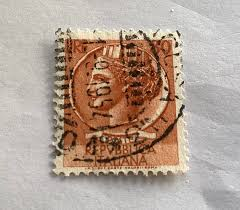 |
| BB Stamps | Errors – Great British Stamps 1840 to DATE. Mint & Used GB Stamps | 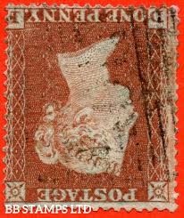 |
| eBay | Scott#8 Parma-Italian States Stamp 25C Used/LH K12721 | eBay | 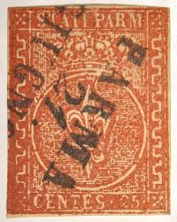 |
| eBay | ÖSTERREICH 1858 10kr, Type II. NEUFELDEN (Oö) Mü:25P! Schön! | eBay | 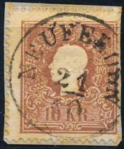 |
| gbimperf.org | 18_LondMX | 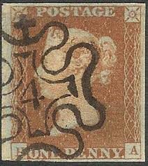 |
| eBay | Postage Revenue ~ King George VI ~ Orange ½D Stamp ~ Posted/Used ~ 1940's ~ Y62 | eBay | 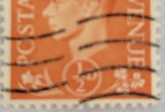 |
| Penny Red Brown 1841 : r/stampcollecting | 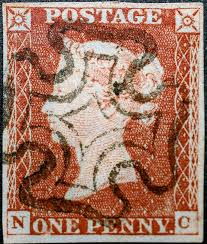 | |
| PicClick UK | SG. 17WI. C1 (1)d. " KI KJ LI LJ MI MJ ". 1d Red Brown. Plate 167. INVERT B73505 £475.00 - PicClick UK | 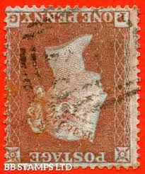 |
| Shields Stamps & Coins | Australia victoria stamps | Victoria Australian States Stamps – Tagged "Victoria" – Page 4 – Shields Stamps & Coins | 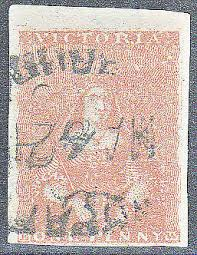 |
| BB Stamps | Perforated 1d Stars – Great British Stamps 1840 to DATE. Mint & Used GB Stamps | 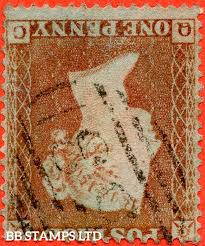 |
| eBay | One: 1942 French 1F50 Postes Stamp Francaises unaffixed cancelled 1942 | eBay | 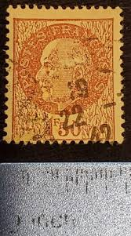 |
| risenshop.com | ITALY ITALIAN RARE VINTAGE | 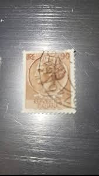 |
| eBay.de | 1841 1d Red Pl 18 MI 4m Very Fine Maltese Cross Fine Used Cat. £135.00 | eBay.de | 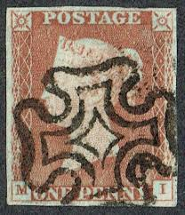 |
| WorthPoint | Vintage Big Bag of Foreign Stamps, Honor-Bilt, 100s of Used Stamps | #4601892978 | 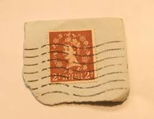 |
| eBay | SPAIN COLONIES, NON IDENTIFIED STAMP, W/WATERMARK | eBay | 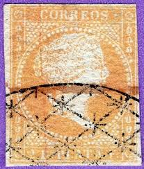 |
| PicClick UK | GB QEII 1952-54 2d RED-BROWN WMK INVERTED SG518Wi USED - SEE PHOTOS £8.65 - PicClick UK | 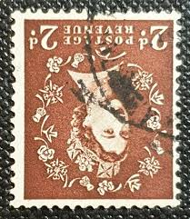 |
| Etsy | 1927 France Mail Postage 7 Stamps - Etsy | 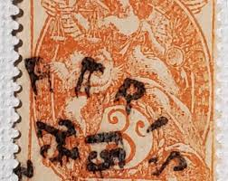 |
| ProBoards | Great Britain: Postmarks | The Stamp Forum (TSF) | 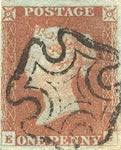 |
| México Lindo GOWINA OSNI 333333 333333 35533 笑 5 5 2 京るSマン RUZ GEL PALENOU PALEN COKKEOSMEXICO CORREO 생고의 ိ်ဆနာသဘ ILCORREOS MEXICO VI V 是 ם M Di 5 5 SEENTAVOS5 SLVs | ||
| eBay | Stamp Russia USSR 1937. SG#728b. PERF. 12 1/2 x 14.Pushkin EXTREMELY RARE #OF68 | eBay | |
| Empirephilatelists.com | Barbados 1855 (4d) Brownish Red SG5 Good Used Stamps|Empire Philatelists | |
| Great Britain Philatelic Society | Post Office Numbers from 1844 - Introduction [Great Britain Philatelic Society] | |
| Bruun Rasmussen | Stamps, Covers & Postal History › Denmark › 1858-udgave › Knockdowns – Bruun Rasmussen Auctioneers | |
| Blogger.com | Big Blue 1840-1940: France - Bordeaux Issue- 30c, 40c, 80c | |
| eBay | Netherlands Sc#130(single frank) AMSTERDAM 12/IV/1924 Regsitered(label) to | eBay | |
| eBay | Belgium RARE stamp 10 Bellies Posterijen Used 1884-1891 | eBay | |
| eBay | Stamps France Scott #624 nh | eBay | |
| Flickr | Brasil Trigo 20 | Mark Morgan | Flickr |